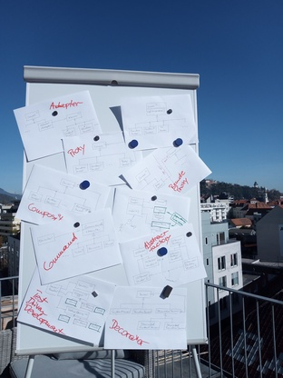

Design Patterns For C++ Developers¶
Goal¶
Software in embedded systems is not generally known to be overengineered. Embedded hardware, though, is becoming more and more capable, and software has to follow suit. Internet connectivity, for example, brings requirements of its own - there are entire new dimensions of configurability and variability.
Software Design Patterns give names to a variety of methods that software developers have used for decades, to attack the problem of increasing software complexity and gravity. Though often associated with overengineering [1], those methods solve real problems. This course gives an overview of the problems, the methods, and most of all, it establishes a common vocabulary. It looks at the whole overengineering topic from the angle of embedded developers who are confronted with their own set of problems.
Course Outline¶

Based on the classic book “Design Patterns: Elements of Reusabe Object Oriented Software” (nicknamed “Gang Of Four”), an overview of the most popular patterns is given. While the book is a catalog of patterns, the course gives a different view of the matter.
Exercises With many practical exercises, the focus is on recognizing problems, coming up with solutions, and communicating solutions using design patterns.
C++ Course language is Modern C++; an overview of “The Newer C++” is given on a case-by-case basis as needed - e.g., smart pointers when ownership discussion is appropriate; the Command pattern is sure an opportunity for a threading intro. (See here for a description of a dedicated course).
Unit Testing and Test Driven Development While testing sure is not the central topic of the course, the exercises are formulated using unit tests. This gives us room for discussion about how to attack the problem of software complexity from another front.
Patterns Covered A variety of patterns is covered in the course, in a sequence that makes didactical sense. Among those are,
|
 |
{kind=link}
Footnotes